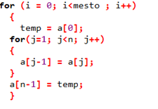
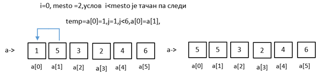
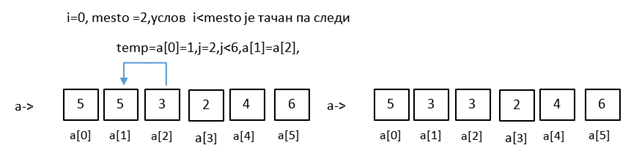
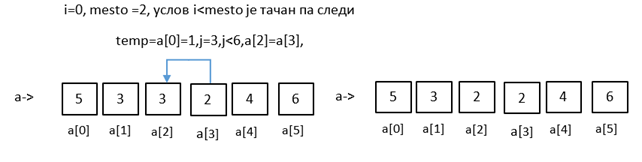
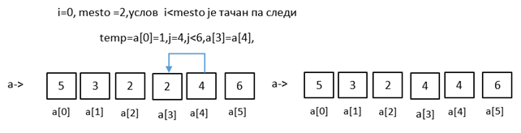
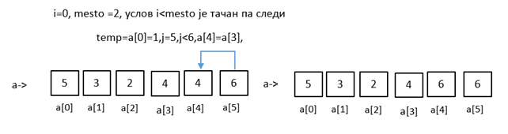
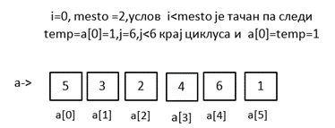
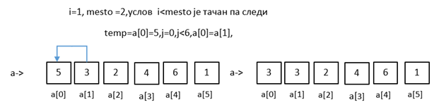
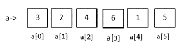

Ротирање низа¶
Ротирање низа представља померање чланова низа за одређен број места у лево или у десно
Задатак: Иницијализујте један низ од шест целобројних елемената a[6]={1,5,3,2,4,6}. Ротирајте иницијализовани низ за два места улево. На основу циклуса написати код
{kind=link}
Решење:
#include <stdio.h>
main()
{
int a[6]={1,5,3,2,4,6},i,j,temp,mesto;
printf("\nUneti niz:\n");
for(i=0;i<6;i++)
{
printf("a[%d]=%d\n",i,a[i]);
}
printf("Unesite broj mesta za pomeranja niza: ");
scanf("%d",&mesto);
for (i = 0; i<mesto ; i++)
{
temp = a[0];
for(j=1; j<6; j++)
{
a[j-1] = a[j];
}
a[6-1] = temp;
}
printf("\nUneti niz rotiran za %d mesta ulevo izgleda :\n",mesto);
for(j=0;j<6;j++)
{
printf("a[%d]=%d\n",j,a[j]);
}
}
Излаз:
Uneti niz:
a[0]=1
a[1]=5
a[2]=3
a[3]=2
a[4]=4
a[5]=6
Unesite broj mesta za pomeranja niza: 2
Uneti niz rotiran za 2 mesta ulevo izgleda :
a[0]=3
a[1]=2
a[2]=4
a[3]=6
a[4]=1
a[5]=5
Хајде да анализирамо корак по корак шта се дешава кроз циклус
     {kind=link}
{kind=link}
{kind=link}
{kind=link}
{kind=link}
{kind=link}
Пробај да направиш још један пролаз на идентичан начин почевши од
{kind=link}
Настави анализу до краја као предходно треба на крају да добијеш низ где су елементи ротира за два места улево у односу на почетну позицију
{kind=link}
Задатак: Написати програм којим се уноси n елемената целобројног низа, затим врши ротирање и на крају исписује ротирани низ.
Решење:
#include <stdio.h>
main()
{
int i,j,a[50],n,temp,mesto;
printf("Unesi koliko elemenata niza unosis ");
scanf("%d",&n);
printf ("Unesi %d elemenata niza: \n",n);
for (i=0; i<n; i++)
{
printf ("a[%d]=",i);
scanf ("%d",&a[i]);
}
printf("Unesite broj mesta za pomeranja niza: ");
scanf("%d",&mesto);
for (i = 0; i<mesto ; i++)
{
temp = a[0];
for(j=1; j<n; j++)
{
a[j-1] = a[j];
}
a[n-1] = temp;
}
printf("\nUneti niz rotiran za %d mesta ulevo izgleda :\n",mesto);
for(j=0;j<n;j++)
{
printf("a[%d]=%d\n",j,a[j]);
}
}
Излаз:
Unesi koliko elemenata niza unosis 5
Unesi 5 elemenata niza:
a[0]=1
a[1]=2
a[2]=3
a[3]=4
a[4]=5
Uneti niz:
a[0]=1
a[1]=2
a[2]=3
a[3]=4
a[4]=5
Unesite broj mesta za pomeranja niza: 3
Uneti niz rotiran za 3 mesta ulevo izgleda :
a[0]=4
a[1]=5
a[2]=1
a[3]=2
a[4]=3